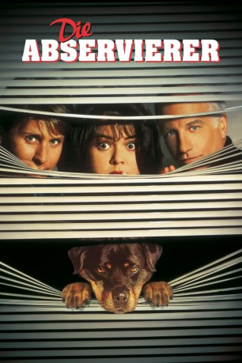

#10819 Die Abservierer
Alternativ: Another Stakeout (Englischer Titel)
 
 IMDB-Wertung: 5.5 / 10
IMDB-Wertung: 5.5 / 10  Metascore: 0
Metascore: 0 
Die zwei chaotischen Polizisten Chris Lecce und Bill Reimers haben einen neuen Auftrag: sie sollen die Kronzeugin in einem Mafia-Verfahren beschützen. Zusammen mit der Staatsanwältin geben sie sich als eine Familie aus...
Jahr: 1993
Dauer: 104 Minuten
FSK: 12
Land: USA Studio: Buena Vista Pictures DistributionTonspuren:
Untertitel:
Auflösung: 1080p (1920x816) Größe: 6563 MB
Genre: Komödie, Krimi
Regisseur: John Badham
Drehbuch: Jim Kouf, Jim Kouf
Soundtrack: Arthur B. Rubinstein
Darsteller:
 Richard Dreyfuss als Chris Lecce
Richard Dreyfuss als Chris Lecce Emilio Estevez als Bill Reimers
Emilio Estevez als Bill Reimers Rosie O'Donnell als Gina Garrett
Rosie O'Donnell als Gina Garrett Dennis Farina als Brian O'Hara
Dennis Farina als Brian O'Hara- Marcia Strassman als Pam O'Hara
 Cathy Moriarty als Lu Delano
Cathy Moriarty als Lu Delano John Rubinstein als Thomas Hassrick
John Rubinstein als Thomas Hassrick Miguel Ferrer als Tony Castellano
Miguel Ferrer als Tony Castellano Sharon Maughan als Barbara Burnside
Sharon Maughan als Barbara Burnside Christopher Doyle als McNamara
Christopher Doyle als McNamara Frank C. Turner als Unlucky
Frank C. Turner als Unlucky- Steven Lambert als Killer
 Dan Lauria als Captain Coldshank
Dan Lauria als Captain Coldshank- Larry B. Scott als Garage Attendant
 Blu Mankuma als Seattle Det. Wills
Blu Mankuma als Seattle Det. Wills Thomas Mitchell als Seattle Det. Gilliam
Thomas Mitchell als Seattle Det. Gilliam- Michael DeLano als Michael
 Al Goto als Pizza Man
Al Goto als Pizza Man Steve Bacic als Neighbor Frank
Steve Bacic als Neighbor Frank- Bruce Paul Barbour als Cop
- Richard L. Blackwell als Cop
- John Badham als Ferry Skipper (uncredited)
 Madeleine Stowe als Maria McGuire (uncredited)
Madeleine Stowe als Maria McGuire (uncredited)- Sharon Schaffer als Tilghman
- Rick Seaman als Van Agent
- Jan Speck als Van Agent
- Gene Ellison-Jones als Vegas Police Captain
- Frank DeAngelo als Vegas Investigator
- J.R. West als Vegas Investigator
- Denalda Williams als Desk Sergeant
- Christi Brasher als Blonde Date
- Sammy Jackson als Gaetano
- Scott Andersen als Reynaldo
- Taylor Estevez als Ronnie Burnside
- Michael Steve Jones als Paramedic
- Chris Shoemaker als Doctor
- Nancy Sosna als Nurse
- Cammie Crier als Nurse
- Martin Rogers als Coroner
Datei: X:\2-Dilogie(N-Z)\Stakeout\Abservierer, Die (1993, FSK12, 1920x816).mkv seit 09.03.2019
Festplatte: HD Collection-2(A-Z)-3(A-M)
 Alle Filme aus Gruppe '2-Dilogie(N-Z)\Stakeout'
Alle Filme aus Gruppe '2-Dilogie(N-Z)\Stakeout'